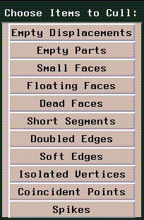

This chapter describes several techniques for fixing objects that have something wrong with them.
Although N-Geometry is extremely good at maintaining object integrity, it's still possible to "break" an object, or to read in an broken object (e.g., an object built in a different system that does not contain enough information to work like an N-Geometry object).
In this Chapter
In discussing how to fix objects, we'll describe several commands:
The Undo command is one of the most powerful features in N-Geometry.
Undo
1. (SHIFT-L) on any element that was affected by the last operation.
The Bless command verifies that all elements within an encoded polyhedron have been correctly connected. Errors are listed in the UNIX shell from which N-Geometry was started. Minor problems, such as an element's missing pointer, are corrected if other references to the element are located.
Bless
If you get an error message that reads:
"Complaints drawing object."
The Cull Elements command lets you "clean up" a polyhedron. To cull elements on a polyhedra:
Cull Elements
1. (SHIFT-L) on the body or object, then (CLICK-L) on Cull Elements.
The Describe command prints a description of any type of selected element in the UNIX shell window from which N·World was started.
Describe
To describe an element, (SHIFT-L) on the element and make the appropriate mouse click:
The following example shows how N-Geometry describes one face of a cube:
#<FACE 1>
body: #<POLYHEDRON 1>
objs: ("CUBE") -edges- -opp. faces- -cw vertices- (impinging edges:)
#<EDGE 1> #<FACE 6> #<VERTEX 2 ( -10.0 10.0 10.0)> (#<EDGE 9>)
#<EDGE 2> #<FACE 3> #<VERTEX 3 ( 10.0 10.0 10.0)> (#<EDGE 10>)
#<EDGE 3> #<FACE 5> #<VERTEX 4 ( 10.0 -10.0 10.0)> (#<EDGE 12>)
#<EDGE 4> #<FACE 4> #<VERTEX 1 ( -10.0 -10.0 10.0)> (#<EDGE11>)
The Revert command rereads the last saved version of this object's body, if one has been previously saved. If you're working with an object that you've read in, but can't get it back into the state you want, you can use this command to read in the last saved version.
Revert
Remember, save your work often!
Copyright © 1996, Nichimen Graphics Corporation. All rights reserved.